Movie Prometheus Analysis (conclusion/lessons to be learned)
Wisdom-Square › Our True History › Movie Prometheus Analysis (conclusion/lessons to be learned)1. Symbols
3. Creation Story / DNA Manipulation
4. Space Jesus / Similar Jesus Stories in other cultures
5. Dangers of Time / Space Travel
6. Conclusion / Lessons to be Learned
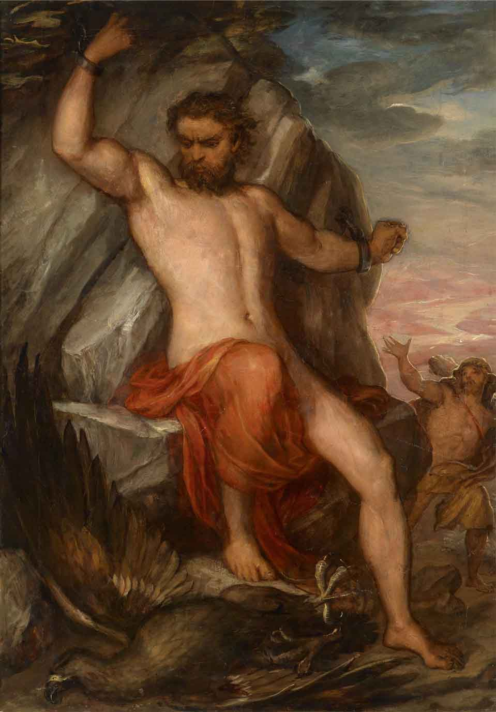
Let’s start with the name Prometheus. It’s the name of the ship that carries the crew to the planet that’s home to the “aliens”/”engineers” that they hope created humans. The name itself comes from Greek mythology. Prometheus was a titan that was known as the “creator of mankind” from clay. He also stole fire from the other gods to teach humans how to use it, advancing their civilization. He was then punished by Zeus (the king of the gods) and sentenced to eternal torment for his sins, because the humans were not yet ready for the responsibility of controlling fire. Prometheus represents the search for scientific knowledge (thus the name of the ship and film) and also foreshadows the fact that one’s efforts to “improve” human life could bring forth tragedy instead. Mary Shelley (author) used “The Modern Prometheus” as the subtitle to her novel Frankenstein (1818) quite appropriately. Interesting, the titan Prometheus was claimed to have “foresight.” In other words, he was someone that was always looking toward the future or always chasing the future, instead of living in the present. His brother was the opposite Epimetheus and possessed “hindsight,” causing him to always reflect… the two extremes. Another Greek myth is that Pandora was the first woman created. She’s later given a box and is told not to open it. In Pandora’s Box, although all of the evils were released upon the world, the box was closed right before one last evil could escape, “foresight”… this is what gave humanity hope. A parallel to this story that’s even more popular is the Adam and Eve story. Eve (the first women created) is told not to eat from the tree of wisdom of good and evil, but does anyway because she gets tricked. She then is banished from Eden along with Adam, who she told to eat along with her. Also the catchphrase, “curiosity killed the cat” is a reference to both of these ancient stories. So, the “take away” from this whole movie is just that… in a never ending quest for knowledge, fueled by human curiosity, there’s always the risk of overreaching or unintended consequences. We may need to be weary of exploring, manipulating, and exploiting too much. This is also captured beautifully in the quote that’s displayed on the movie poster:
“The search for our beginning could lead to our end.”
Click here to watch a pivotal deleted scene that explains this.
In other words, is it morally ethical to manipulate DNA, clone humans (creating life), warp time/space (changing the past and future for our own personal gain) in essentials… should we be playing god? Trying to control the lives of everyone or just control our own life and help others take control of their lives, but not forcing anything upon others?
In the opening scene, a cloaked engineer is seen standing underneath a giant UFO on a desolate earth. He ingests some sort of black liquid, which causes his body to disintegrate and fall into the ocean as his DNA breaks apart and where it’s seen his cells begin to mutate. It was as if he understood that he was the cause of the planet becoming desolate, and that it was necessary for him to commit self-sacrifice in order to save the rest of mankind. To me this scene embodies the myth of the titan Prometheus, having to endure self-sacrifice for “helping further” human civilization… but in actuality it backfired and destroyed civilization. It may also be representative of the concept of a phoenix, having a new civilization being reborn / arising from the ashes of its predecessor. One of the characters later in the movie was even quoted for saying, “Sometimes to create, one must first destroy.” This quote can be seen everywhere in the Bible, perhaps the most prominent in the Old Testament with the story of Noah and his ark. God sends constant rain upon the earth to flood and destroy it so that select humans can start over.
Also note that the concept of this self-sacrifice is meant to be symbolic to not only Prometheus self-sacrifice, but also to Jesus’ self-sacrifice so that we may live, as can be seen later in repeated references to Jesus.
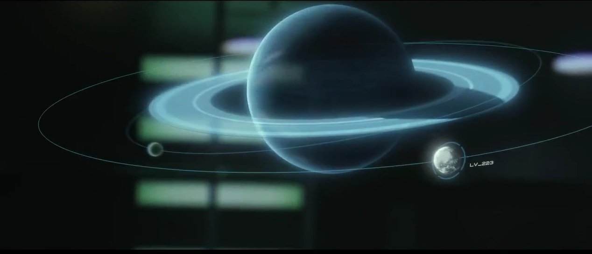
There’s something fascinating about humanity where we perceive it as an invitation. You look at a cave wall, and there’s somebody pointing at some distant planets and our interpretation is “This is where we come from” or “We want you to come here.” The engineers could have been teaching humans about the source of the creatures they were meant to become. Pointing to their home planet and explaining how the universe works to us.
They land on the planet that they have named LV-223 (not LV-426, where the original movie “Alien” takes place and is seen as their home planet). This new planet’s name is a reference to the biblical passage of Leviticus 22:3. Basically this passage speaks about “uncleaned” (curiosity without responsibility) people that are “banished” (or forced to commit self-sacrifice) when they “meet the lord” (when they realize that they’ve gone too far with something). The planet is also seen as one of the moons circling a larger gas giant, which was to reference a real moon that could potential harbor life. This might have been because everyone in the movie dies, except for Dr. Shaw who has an unbreakable faith in god.
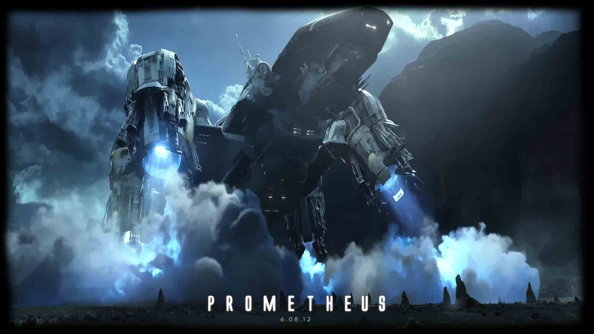
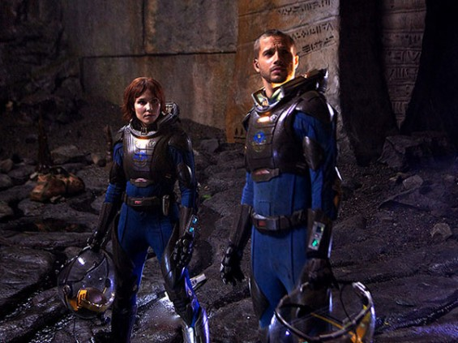
The lead archeologists Dr. Elizabeth Shaw is another reference to the bible. The name Elizabeth is the Greek transliteration of the Hebrew name Elisheva, meaning “God’s promise,” “oath of God,” or “I am God’s daughter.” She’s always wearing her father’s cross throughout the movie and keeps her faith in God, although her lover has lost his faith. It’s believed that this is what keeps her alive by the end of the movie as well. In a transmission to Weyland, Dr. Shaw pleads to him, “Do you ever feel all the science in the world will never give us the answers we really want?” At the end of the movie she’s the only one that survives because she’s the only true believer in an afterlife, in other words heaven. In contrast, her lover’s name is Charles Holloway, which is from the Germanic word Karl meaning “free man.” Charles’s faith is in science, much like Charles Darwin… later in the movie David asks him what he would do to be able to get his answers to the big questions of life. He responds, “Anything and everything.” David then proceeds to put the black liquid he found in the engineer’s vase into his drink as an experiment to see what will happen, since it was as if Charles just agreed to it.
When hollow and the crew realize that he’s infected, he decides to commit self-sacrifice to save the rest of the crew from any risk of infection as well. He holds out his arms, in a crucifixion pose, suggests that he may have renewed his belief in god. The captain at the end of the movie, right before crashing his ship into the engineer’s ship, also holds out his arms in the same manner. Some of the co-pilots mention something about a bet and paying it back on the other side. The sub-text is obvious here that they have a renewed belief in god, unlike Dr. who always kept her faith.
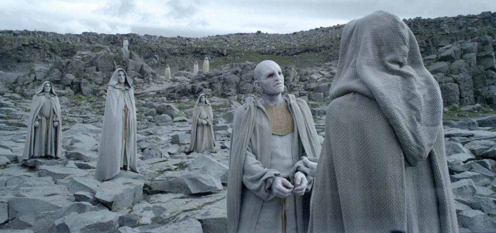
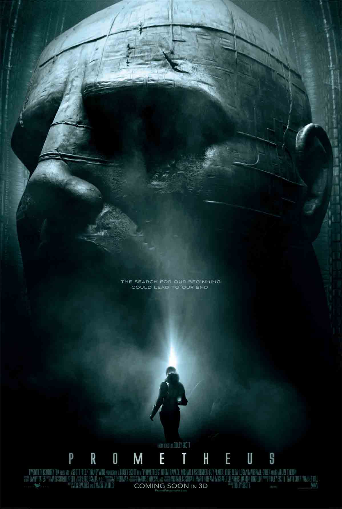
In a scene Hollow asks Dr. Shaw “Why don’t you stop believing in god, if you know that the aliens made us? She replies,” and who made the aliens?” In a deleted scene it’s actually revealed in the beginning of the movie that there are “elder engineers” that witnessed the lone engineer commit self-sacrifice. In the sequel to this movie (Promethues 2 – Paradise, 2014) it’s believed that it will be revealed that these elder engineers created the engineers that created humans. So if the engineers created/modified us humans, it’s clear that we would have first been mistaken in thinking that the engineers were “gods.” But in reality the engineers were created too just like us, so at some point there must be only one source that started/created everyone and everything. God then must be timeless, never born nor can die (more on the theory of this here that supposes that god is “consciousness”). Engineers may have mastered DNA manipulation, the creation of races, and space/time travel. It may even have become a part of their religious belief that their purpose in life is to create other life, basically trying to play god. Just imagine what if that happened, all because they mastered DNA manipulation (i.e. cloning today) and time travel. This is when curiosity gets the best of us, and we must morally put an end to our exploration, unless we can fully accept the responsibility and unforeseen consequences of our actions. The ego and curiosity can easily get out of hand when combined. And all this subtly placed within one movie, not bad huh? Too bad the actual movie by itself doesn’t do justice at all to all of these themes that they attempted to cover.
|
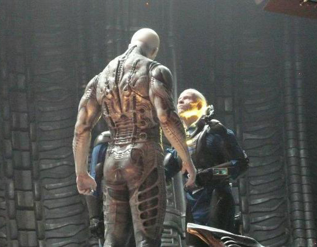 |
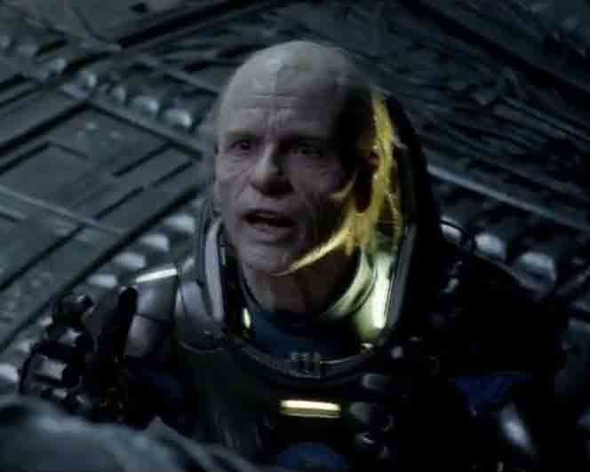 |
As soon as Peter Weyland is woken up he appears to look like a zombie, representing someone that is supposed to be dead, but didn’t go into the afterlife. Later, David is seen washing his feet. This is another Christian symbol of cleansing false ideas. Because Weyland is killed later, this suggests that he has corrupt beliefs and doesn’t understand eternal life, or is willing to accept the afterlife. At the beginning of the Last Supper, Jesus washed his disciples’ feet. Peter refused to let Jesus wash his feet, to which Jesus said, “If I wash thee not, thou hast no part with me.” Peter replied, “Lord, not my feet only, but also my hands and my head.” The idea that Weylands’ feet are being washed just before his “last supper”/right before meeting an engineer.
Old man tries to obtain immortal life out of fear of not knowing what happens in the afterlife. He uses David (the android) to communicate with the engineer to ask for his request. David speaks in the engineer’s language in the movie, but it’s been translated into “This man is here because he does not want to die. He believes you can give him more life.” In the deleted scenes the story continues and the alien asks for what reason does he want to live forever? Wayland replies back that he thinks of himself as a god, just like the engineer’s race is thought of as god by ancient man… Wayland created android life in his own image, where the engineers created human life, and he deserves to live forever as he too is a god. The engineer then kills him instantly, realizing that he’s too corrupt.
|
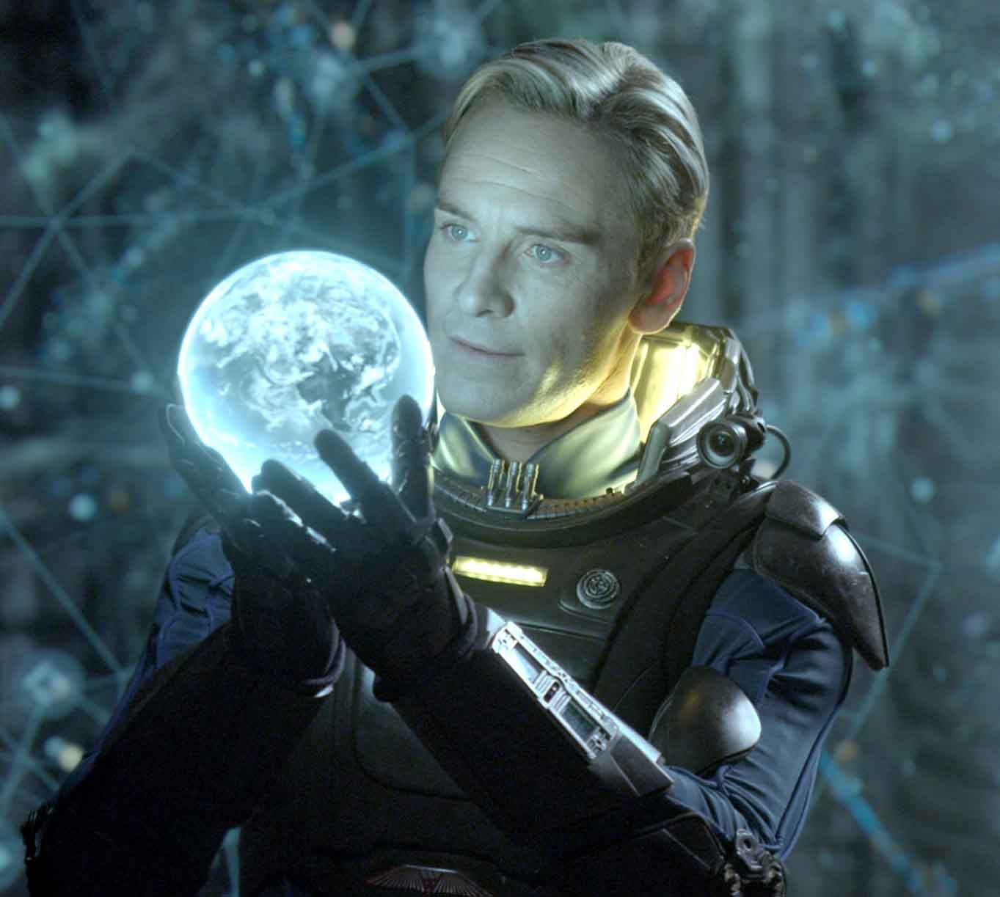 |
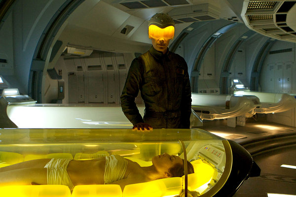 |
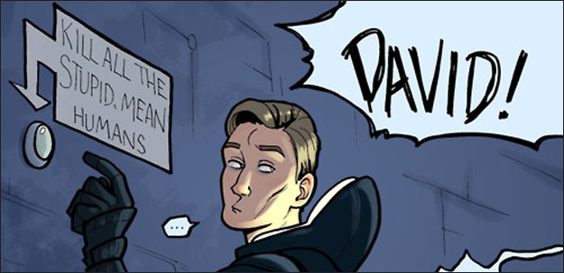 |
David is the name of the most important character in this movie. Funny enough is that he’s not actually human, but an android. This ingeniously captures the image of turning us (humans) into the creator. It asks a core question, that if we created this humanoid/android, does it have a soul? In other words, should we care about our creation as if we were to care for another human being? Can you see how this parallels the concept of aliens/engineers creating/modifying us? So if we don’t care about our creation of androids (which in this movie the humans clearly don’t) then why should the aliens that created humans care about us? They could be asking the same thing, if we have a soul? This is something the movie wants you to think about while you’re watching it.
Continuing David’s independent curiosity he takes one of the containers with him back to the ship to study it. Keeping it a secret from everyone else.
David states that he understands emotion, but just cannot feel it for himself. Although, it’s seen that his daily routine consists of learning new languages, watching classic movies (and imitating his favorite star), and spying on people’s dreams. The key thing that all of these actions portray is one essential characteristic of human nature; (almost proving that he must be “human”) which is CURIOSITY. This begs to ask the question: How long does one have to “act” human, before they become human? In eastern philosophy it’s believed that everything has a soul: animals, plants, rocks, the earth, metals (including computers). David is an independent thinker and does what he wants to do, just like humans. His actions were based off of a need to fulfill a desire inside of him, which was to learn something new, without regard to how impersonal or intrusive he may be (example of him spying on other’s dreams). At this point we should start to understand that with great curiosity (which we all naturally possess) comes great responsibility. That is unless we metaphorically want to get burned for playing with fire, like in the Greek myth of Prometheus.
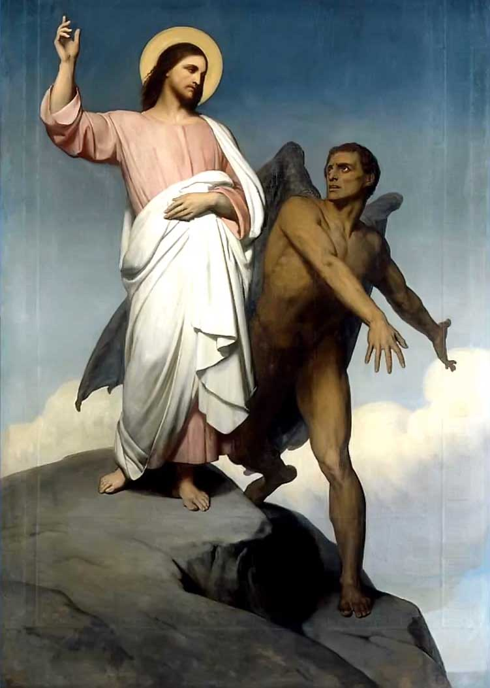
David is portrayed as Satan and King David (from the Hebrew bible) becoming corrupt. This relationship may symbolize how in the Bible King David was chosen by God, just like how David is chosen by Peter Weyland (the android’s “god” technically since he created him) to be his right-hand man. But towards the end of the movie (and the end of King David’s rule) he becomes more evil. David in the movie is quoted saying, “Doesn’t everyone want their parents dead?” He says this because he sees how Viktors wants her father dead so she can rule over his company. But, it’s as if he symbolically transformed to Satan and he’s going to rebel against his creator now. There’s some sort of forbidden knowledge that he acquired from his observations and experiences that the other humans in the movie don’t understand.
The most pivotal conversation in the entire film is when Hallow says that he’s disappointed that all the engineers are dead. His whole goal was to ask them the big question: Why were humans made and for what purpose were we to serve? This leads David to respond asking, “Why do you think you’re people made me?” Hollow says, “We made you because we could.” David responds, “Can you image how disappointing it would be for you to hear the same thing from your creator?” This points out that it’s quite possible that the engineers didn’t have some profound reason for creating us. They didn’t need to have some grand purpose, and perhaps just created humans because they could… out of mere curiosity and nothing more.
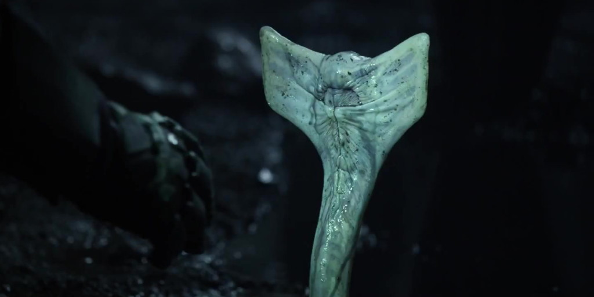
Mounds of Madness, that we constantly try to seek out the answers to the big questions.. and if we push too much to find these answers we might go insane from the truth if we’re not ready. We need to look inward and not outward for true peace.
There’s a snake back in the tunnels of the engineer’s pyramid. In Christianity, this is a symbol of Satan, the guardian of forbidden knowledge. This suggests the engineer’s discovered something we shouldn’t know.
|
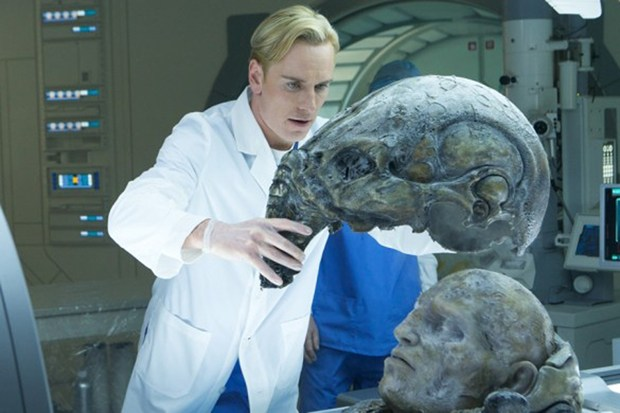 |
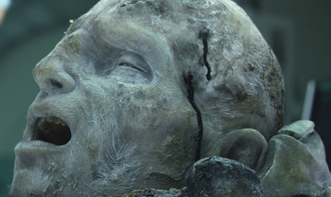 |
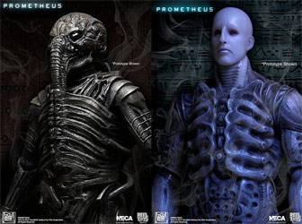 |
One of the best moments in the movie was when they are back in the ship with the engineer head. And discover that the head’s exoskeleton is actually a helmet. Within the helmet was a head that looked human. After a DNA test it’s revealed that the head’s DNA is mostly the same as our human DNA. This is an amazing dramatization of another ancient astronaut theory. In real life there are ancient cave drawings and sculptures that seem to depict aliens wearing space suits.
Interesting to note is that there is a globe hovering over the living engineer near the end of the movie that shows Africa. What’s weird is that if these “gods” made us in their image, shouldn’t the engineers have been black instead of white.
|
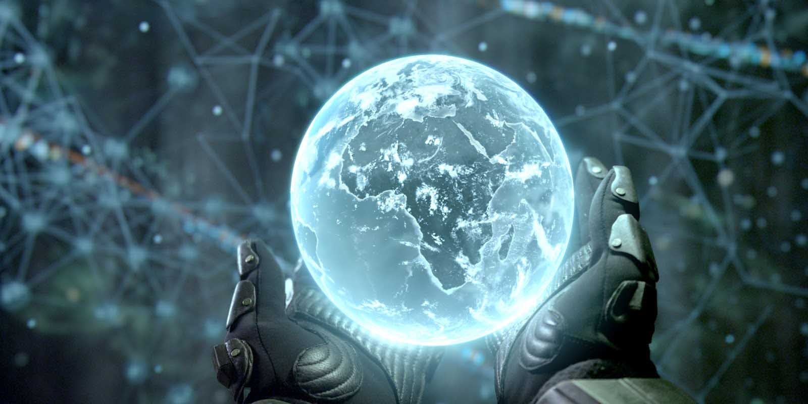 |
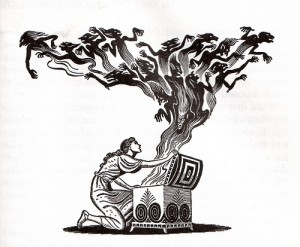 |
Food for Thought:
If no one ever taught you what to believe in, what would you believe? Do you follow a certain religion because that’s what you were born into? Are you living according to the values and beliefs you’ve adopted from your family? How’d you know to believe in God if no one ever instilled that into you? Start questioning things. Analyze. Change yourself and others. A strong, wise, and free person is one who does not agree with and accept everything they hear, rather they subscribe to what feels right to them.
We’re not facing off world genetic engineers (weather true to not) the global techno-crats that are splicing every plant, animal, and insect. We are creating Chimerical with hundreds of species within them, giving rise to super viruses and bacterial mutations. We already see within 3 generations of rodents to have total sterilization and massive deformities. And we’re proven from the Rockefeller foundation documents and other reports that this is a part of a long term program to wreck the general public’s DNA. This is the global generation, Illuminati. Doomsday Seed Vault in the Arctic. Bill Gates, Rockefeller and the GMO giants know something we don’t. (by F. William Engdahl). Genetically Modified Soy linked to Sterility, Infant Mortality in Hamsters. (be an advocate for healthier non-GMO choices. A placenta simulator and infant opossums may one day lead to super babies. Genetically engineered foods and crops that are on record already causing organ failure, cancer, and other health problems, not just on mice and rats that they test it on, but on humans. You’re being genetically engineered right now. Thousands of variants of crops without asking anybody. Not asking our permission since it’s poisoning and evolving us.
Wisdom-Square › Our True History › Movie Prometheus Analysis (conclusion/lessons to be learned)